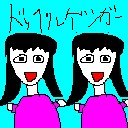
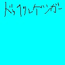
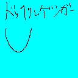
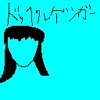
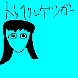
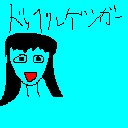
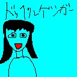
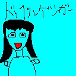
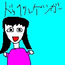

LINEスタンプ風画像「ドッペルゲンガー」
誰でも描ける！これを描いて、絵が下手な人の気持ちを理解しよう！
他イラストに応用できるようにするための説明も付け加えてます！

材料 （Windows）
- PC(ノート デスクトップ どちらでも可) 1台
- キーボード 1つ
- マウス 1つ
- Windows Windows 98 ～ Windows 11
- PictBear v2.04
- 人間 ＝自分
- やる気 できるだけ多く
作り方
-
1複雑な絵を描くわけではないので、128×128(jpeg)で作成します。
1桁KBで作成できるのでおすすめです。 -
2水色で塗りつぶします。
-
3画像上部に1pxの太さで「ドッペルゲンガー」と書きます。

-
4顔の輪郭を描きます。
\(y=\frac{x^{2}+|x|}{10}\)が目安です。
-
5ギザギザ部分とハの字になるような髪を追加します。
終わったら黒で塗りつぶします。
※男性を描きたい場合は、ハの字の部分を描かないでください。
-
6楕円2つと、その中に塗りつぶした楕円を2つ描くことにより、目を描きます。
外側は、\(C_{1}:x^{2}+3y^{2}=1\)
内側は、\(C_{2}:x^{2}+3y^{2}=\frac{1}{4}\)
が目安です。
※内側の楕円を両目同じだけ平行移動させても構いません。
-
7自由に口を描きます。
今回は、\(y=x^{2}\)を目安に描き、始点と終点を直線で結び、内部を赤で塗りました。 -
8平行な直線を2本引きます。
\(x=k\)(定数), \(x=k+n\)(定数)くらいを意識します。
-
9逆U字型の胴体を描きます。
\(y=-x^{4}\)くらいを意識します。
-
10マイクのかたちを意識して、肩より少し下に描きます。
後ほど右側にも描くので、小さめに描く。
※今回はスペースの都合上描かないが、足を描く場合も同様のことを意識します。
-
11目、顔、手を白で。服をピンクで塗ります。
男性の場合は青、緑がおすすめです。
-
12今回はドッペルゲンガーを描きたいので、レイヤーを使ってコピーして並べます。
範囲選択で女性を囲み、Ctrl+C→Ctrl+V→ドラッグ で右側にコピーします。